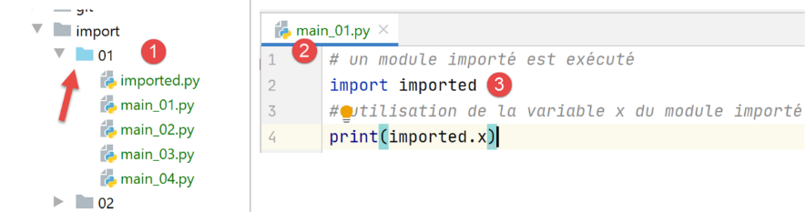

9. عمليات الاستيراد
الخطأ الذي واجهناه في الإصدار 1 من التمرين التطبيقي يدفعنا إلى التعمق في دور الأمر [import].

9.1. البرامج النصية [import_01]
سيتم استيراد البرنامج النصي [imported] بواسطة برامج نصية مختلفة (تُسمى أيضًا وحدات):

# تم استيراد الوحدة النمطية
# سيتم تنفيذ هذه التعليمات في كل مرة يتم فيها استيراد الوحدة النمطية
print("2")
# متغير تابع للوحدة المستوردة
x=4
يتم تنفيذ الوحدة النمطية عند استيرادها. وبالتالي، عند استيراد الوحدة النمطية [imported]:
- سيتم عرض السطر 3؛
- ستتلقى المتغير x في السطر 5 قيمته؛
النص البرمجي [main_01] هو كما يلي:
# يتم تنفيذ الوحدة المستوردة
import imported
# استخدام المتغير x من الوحدة المستوردة
print(imported.x)
- السطر 2: يتم استيراد الوحدة النمطية [imported]. سيؤدي ذلك إلى تنفيذها:
- سيتم عرض القيمة 2؛
- يتم إنشاء المتغير x بقيمة 4؛
- السطر 4: يتم استخدام المتغير x من الوحدة المستوردة؛
في PyCharm، تم الإبلاغ عن خطأ:
في [1]، تشير PyCharm إلى أنها لا تعرف الوحدة النمطية [imported]. من الناحية الفنية، هذا يعني أن المجلد الذي يحتوي على الوحدة النمطية [imported] غير موجود في مسار Python الخاص بـ PyCharm. مسار Python هو مجموعة المجلدات التي يتم فيها البحث عن الوحدات المستوردة. لحل هذه المشكلة، يكفي تحديد المجلد الذي توجد فيه الوحدة [imported]، وهو في هذه الحالة المجلد [import/01]، في الوحدة [Sources root]:


بعد هذه العملية، يتم إضافة المجلد [import/01] إلى مسار Python في Pycharm وتختفي الرسالة:

- في [1]، تغير لون المجلد [01]؛
- في [2-3]، لم يعد هناك أي خطأ؛
نتائج التنفيذ هي كما يلي:
تعليقات
- السطر 2 هو نتيجة تنفيذ الوحدة المستوردة؛
- السطر 3 يعرض قيمة المتغير x في الوحدة المستوردة؛
من هذا المثال، نستخلص المفهوم المهم المتمثل في أن الوحدة النمطية (أو البرنامج النصي) المستوردة يتم تنفيذها.
النص البرمجي [main_02] هو كما يلي:
# يتم استيراد المتغير x من الوحدة المستوردة
from imported import x
# يتم عرضها
print(x)
- في السطر 2، لدينا صيغة أخرى للاستيراد [from module import objet1, objet2, …]. هنا نستورد المتغير [imported.x]. باستخدام هذه الصيغة، يصبح المتغير x متغيرًا في البرنامج النصي [main_02]. لم يعد هناك حاجة إلى إرفاق بادئة الوحدة النمطية [imported] بها؛
- السطر 4: يتم عرض المتغير x من البرنامج النصي [main_02]؛
نتائج التنفيذ هي كما يلي:
النص البرمجي [main_03] هو كما يلي:
# يتم استيراد كل ما هو مرئي من الوحدة المستوردة
from imported import *
# استخدام المتغير x من الوحدة المستوردة
print(x)
تشير الترميز [import *] في السطر 2 إلى استيراد جميع الكائنات المرئية من الوحدة المستوردة (المتغيرات، الدوال).
والنتائج هي كما يلي:
النص البرمجي [main_04] هو كما يلي:
# يتم استيراد المتغير x من الوحدة المستوردة
# ويتم إعادة تسميتها إلى y
from imported import x as y
# يتم عرض المتغير y
print(y)
يُظهر السطر 3 أنه يمكن استيراد كائن من الوحدة المستوردة وتعيين اسم مستعار له. هنا، تصبح المتغير [imported.x] المتغير [main_04.y]. النتائج هي نفسها كما في السابق.
9.2. النص البرمجي [import_02]

وحدة [module1.py] المستوردة هي كما يلي:
# دالة
def f1():
print("f1")
تُعرّف الوحدة المستوردة دالة، وهو أمر شائع.
النص البرمجي [main_01] هو التالي:
# استيراد
import module1
# تنفيذ f1
module1.f1()
- في السطر 2، يتم استيراد الوحدة النمطية. وسيتم تنفيذها. هنا، لا تعرض أي شيء؛
- السطر 4: يتم تنفيذ الدالة [f1] الخاصة بالوحدة المستوردة؛
نتائج التنفيذ هي كما يلي:
ملاحظة: لتجنب إصدار PyCharm لخطأ عند الاستيراد في السطر 2، يجب وضع المجلد الذي يحتوي على [module1] داخل [Sources Root] التابع لـ PyCharm:

في ملف [1]، تحولت لون المجلد [02] الموجود داخل المجلد [Sources Root] إلى اللون الأزرق. تجدر الإشارة إلى أن الخطأ المُبلغ عنه لا يمنع هنا التنفيذ الصحيح للبرامج النصية. ففي الواقع، عند تنفيذ البرنامج النصي [main_0x]، يتم إضافة مجلد البرنامج النصي تلقائيًا إلى مسار Python. وبالتالي يتم العثور على [module1]. من الآن فصاعدًا، عندما يظهر مجلد باللون الأزرق في لقطة شاشة، فهذا يعني أنه تم وضعه في مسار Python الخاص بـ [Sources Root] من PyCharm.
النص البرمجي [main_02] هو كما يلي:
# استيراد
from module1 import f1
# تنفيذ f1
f1()
- السطر 2 يستورد الدالة [f1] من الوحدة النمطية [module1]؛
- في السطر 4، يتم استخدام الدالة f1؛
النتائج مطابقة لتلك الخاصة بالنص البرمجي [main_01].
9.3. البرامج النصية [import_03]

ملاحظة: يقع البرنامج النصي [03] ضمن ملفات [Sources Root] الخاصة بالمشروع.
ستقوم البرامج النصية الجديدة باستيراد الوحدة النمطية [module2] التي لا توجد في نفس المجلد الذي توجد فيه هذه البرامج النصية.
النص البرمجي [module2] هو كما يلي:
# دالة
def f2():
print("f2")
وبالتالي، يحدد البرنامج النصي دالة [f2].
النص البرمجي [main_01] هو كما يلي:
# استيراد الوحدة النمطية Class2
import dir1.module2
# تنفيذ f2
dir1.module2.f2()
- السطر 2: يتم استخدام ترميز خاص للإشارة إلى كيفية العثور على الوحدة النمطية [module2]. يجب قراءة [dir1.module2] على أنه المسار [dir1/module2]: للعثور على [module2]، نبدأ من مجلد البرنامج النصي الحالي [main_01]، ثم ننتقل إلى [dir1]، وهناك نجد [module2]. يجب ألا ننسى هنا أن نقطة انطلاق المسار هي مجلد البرنامج النصي الذي يقوم بالاستيراد؛
- السطر 4: لتنفيذ الدالة [f2] من [module2]؛
والنتائج هي كما يلي:
السطر 2، نتيجة الدالة [f2].
النص البرمجي [main_02] هو كما يلي:
# استيراد الوحدة النمطية dir1.module2 التي تم تغيير اسمها
import dir1.module2 as module2
# تنفيذ f2
module2.f2()
السطر 2، يتم إعادة تسمية الوحدة النمطية [dir1.module] لتبسيط كتابة السطر 4.
النص البرمجي [main_03] هو كما يلي:
# استيراد الدالة f2 من الوحدة النمطية dir1.module2
from dir1.module2 import f2
# تنفيذ f2
f2()
هذه المرة، في السطر 2، نستورد فقط الدالة [f2] التي تصبح عندئذٍ دالة في البرنامج النصي [main_03] (السطر 4).
تعمل جميع هذه البرامج النصية بشكل جيد سواء في سياق PyCharm أو في سياق وحدة تحكم Python. والسبب هو أنه في كلتا الحالتين، فإن مجلد البرنامج النصي الذي يتم تنفيذه، وهو هنا مجلد [03]، يشكل جزءًا من مسار Python. وبالتالي، يتم العثور على مجلد [dir1/module2].
9.4. نصوص برمجية [import_04]

هنا، تم وضع المجلدين [dir1] و [dir2] ضمن المجلد [Sources Root] التابع للمشروع PyCharm.
الوحدة الأولى التي تم استيرادها هي [module3]:
# دالة
def f3():
print("f3")
الوحدة الثانية التي تم استيرادها هي [module4]:
from module3 import f3
# دالة
def f4():
f3()
print("f4")
- في السطر 1، يتم استيراد الدالة [f3] من [module3]. هنا، تظهر [module3] لأننا وضعنا ملفها [dir1] داخل [Sources Root]؛
- الأسطر 4-6: يتم تعريف دالة [f4] التي تستدعي الدالة [f3] من [module3]؛
النص البرمجي الرئيسي [main_01] هو كما يلي:
# يتم استيراد الوحدة النمطية 4
from module4 import f4
# تنفيذ f4
f4()
- في السطر 2، يتم استيراد الوحدة النمطية [module4]. وتكون هذه الوحدة مرئية لأن المجلد الخاص بها [dir2] قد تم وضعه ضمن المجلد [Sources Root] التابع لـ PyCharm؛
- السطر 4: تنفيذ الدالة [f4] من [module4]؛
نتائج تنفيذ [main_01] في PyCharm هي كما يلي:
الآن، لنقم بتنفيذ [main_01] في محطة عمل (وحدة تحكم) Python:

والنتائج هي كما يلي:
ماذا حدث؟ لا تعرف وحدة التحكم في Python شيئًا عن مسار Python (Python Path) ولا عن [Sources Root] أو PyCharm. ولديه مسار Python الخاص به. وفي هذا المسار، يوجد دائمًا المجلد الخاص بالنص البرمجي الذي يتم تنفيذه، وهو في هذه الحالة النص البرمجي [main_01]. وبالتالي، فهو يعرف المجلد [import/04]. وفي النص البرمجي الذي يتم تنفيذه، يجد السطر التالي:
from module4 import f4
يبحث مترجم Python عن [module4] في المجلدات الموجودة في مسار Python الخاص به. إلا أن [module4] لا يوجد في [import/04] —الذي يوجد بالفعل في مسار Python— بل في [import/04/dir2] الذي لا يوجد فيه. ومن هنا تأتي الخطأ.
لذلك، نواجه مشكلة سبق أن واجهناها: قد يتعطل البرنامج النصي الذي يعمل بشكل صحيح في PyCharm في سياق محطة Python. هذه مشكلة متكررة سيتعين علينا حلها.
9.5. البرامج النصية [import_05]

ملاحظة: يتم وضع المجلدين [dir1] و [dir2] في مسار Python. ولنلاحظ أولاً أن هناك تعارضًا: سيتم العثور على [module3] و [module4] في مكانين ضمن مسار Python الخاص بـ PyCharm:
- في [import/04/dir1] و [import/05/dir1] بالنسبة لـ [module3]؛
- في [import/04/dir2] و [import/05/dir2] بالنسبة لـ [module4]؛
وبذلك يمكن استخراج [import/04/dir1] و [import/04/dir2] من [Sources Root] التابع للمشروع PyCharm. ويتبين هنا أن [import/05/dir1] هو نسخة من [import/04/dir1] (وينطبق الأمر نفسه على [dir2])، وبالتالي لا توجد أي مشكلة. ولكن تجدر الإشارة إلى أنه داخل ملف PyCharm نفسه، يجب الانتباه إلى قائمة المجلدات الموجودة في ملف [Sources Root] لتجنب حدوث تعارضات.
يصبح النص البرمجي [main_01] كما يلي:
import sys
# يتم تعديل sys.path لتضمين المجلدات
# التي تحتوي على الفئات المراد استيرادها
sys.path.append(".")
sys.path.append("./dir1")
sys.path.append("./dir2")
# يتم استيراد module4
from module4 import f4
# تنفيذ f4
f4()
نحن نسعى إلى حل مشكلة مسار Python. نريد مسارًا يعمل بشكل جيد سواء في PyCharm أو في محطة Python. ولهذا الغرض، سنقوم بإصلاح المشكلة بأنفسنا.
- الأسطر 4-6: نضيف مجلدات [., ./dir1, ./dir2] إلى مسار Python. لكي يعمل هذا، يجب أن يكون المجلد الحالي عند التنفيذ هو مجلد [import/05]. سيكون هذا صحيحًا في PyCharm ولكنه ليس صحيحًا بالضرورة في محطة Python كما سنرى؛
- السطر 8: يتم استيراد [module4]. وبناءً على ما قمنا به للتو، من المفترض أن يتم العثور عليه في [./dir2]؛
يؤدي التنفيذ في PyCharm إلى النتائج التالية:
الآن، في محطة عمل Python:
(venv) C:\Data\st-2020\dev\python\cours-2020\python3-flask-2020\import\05>python main_01.py
f3
f4
السطر 1، مجلد التنفيذ هو [import/05].
الآن لن نرتقي مستوى واحدًا في شجرة [import/05]:
(venv) C:\Data\st-2020\dev\python\cours-2020\python3-flask-2020\import\05>cd ..
(venv) C:\Data\st-2020\dev\python\cours-2020\python3-flask-2020\import>python 05/main_01.py
Traceback (most recent call last):
File "05/main_01.py", line 8, in <module>
from module4 import f4
ModuleNotFoundError: No module named 'module4'
- السطر 2، عند تنفيذ [main_01]، لم نعد في المجلد [import/05] بل في [import]. لكننا كتبنا:
sys.path.append(".")
sys.path.append("./dir1")
sys.path.append("./dir2")
وهذا يضيف المجلدات [import, import/dir1, import/dir2] إلى مسار Python، وهو ليس ما نريده على الإطلاق. تجدر الإشارة إلى أن إضافة مجلدات غير موجودة (import/dir1، import/dir2) إلى مسار Python لا تسبب أي أخطاء.
لقد أحرزنا تقدماً، لكن هذا لا يكفي. يجب إضافة مسارات مطلقة، وليس مسارات نسبية، إلى مسار Python.
البرنامج النصي [main_02] هو نسخة معدلة من [main_01] تستخدم ملف التكوين [config.json]:
{
"dependencies": [
"C:/Data/st-2020/dev/python/cours-2020/python3-flask-2020/import/05/dir1",
"C:/Data/st-2020/dev/python/cours-2020/python3-flask-2020/import/05/dir2"
]
}
قيمة المفتاح [dependencies] هي قائمة المجلدات التي يجب إضافتها إلى مسار Python. تجدر الإشارة إلى أنه تم هنا استخدام أسماء مطلقة وليس أسماء نسبية.
يستخدم البرنامج النصي [main_02] الملف [config.json] بالطريقة التالية:
import codecs
import json
import sys
# ملف التكوين
config_filename="C:/Data/st-2020/dev/python/cours-2020/python3-flask-2020/import/05/config.json"
# قراءة ملف التكوين json
with codecs.open(config_filename, "r", "utf-8") as file:
config = json.load(file)
# تعديل sys.path
for directory in config['dependencies']:
sys.path.append(directory)
# استيراد module4
from module4 import f4
# تنفيذ f4
f4()
- السطر 6: لاحظ أنه تم استخدام الاسم المطلق لملف التكوين؛
- السطران 8-9: يتم قراءة ملف التكوين. يتم إنشاء قاموس [config] (السطر 9) بمحتواه؛
- الأسطر 11-13: تتم إضافة عناصر المصفوفة [config['dependencies']] إلى مسار Python. تجدر الإشارة إلى أنه نظرًا لاستخدام أسماء مجلدات مطلقة في [config.json]، يتم إضافة أسماء مطلقة إلى مسار Python؛
- السطر 16: يتم استيراد [module4]. ومن المفترض العثور عليه نظرًا لأن [dir2] موجود الآن في مسار Python؛
يُعطي التنفيذ نفس النتائج التي تم الحصول عليها مع [main_02]، باستثناء أن البرنامج النصي يستمر في العمل عندما لا يكون مجلد التنفيذ هو [import/05]:
(venv) C:\Data\st-2020\dev\python\cours-2020\python3-flask-2020\import>python 05/main_02.py
f3
f4
السطر 1، مجلد التنفيذ هو [import].
لقد أحرزنا تقدماً. وقد رأينا:
- أنه كان علينا إنشاء مسار Python بأنفسنا؛
- أنه كان علينا إدراج الأسماء المطلقة لجميع المجلدات التي تحتوي على الوحدات النمطية التي يستوردها التطبيق؛
ومع ذلك، فإن إدراج الأسماء المطلقة في البرامج النصية ليس حلاً. فما أن يتم نقل المشروع إلى موقع آخر، حتى يتوقف عن العمل. لذا، علينا إيجاد حل آخر.
9.6. البرامج النصية [import_06]

ملاحظة: تم وضع المجلدات [06, dir1, dir2] داخل المجلدات [Sources Root] التابعة للمشروع PyCharm. أما المجلدات [dir1, dir2] فهي مطابقة لتلك الواردة في الأمثلة السابقة.
الملف [config.json] هو كما يلي:
{
"rootDir": "C:/Data/st-2020/dev/python/cours-2020/v-02/imports/06",
"relativeDependencies": [
"dir1",
"dir2"
],
"absoluteDependencies": [
]
}
نقدم نوعين من المسارات:
- المسارات المطلقة، السطور 7-8؛
- المسارات النسبية، الأسطر 3-6. وهي نسبية بالنسبة إلى الجذر الموجود في السطر 2. وبالتالي، عندما يتم نقل المشروع إلى موقع آخر، يجب تعديل هذا السطر فقط؛
يستخدم البرنامج النصي [utils.py] الملف [config.json] ويقوم بإنشاء مسار Python:
# عمليات الاستيراد
import codecs
import json
import os
import sys
# تكوين التطبيق
def config_app(config_filename: str) -> dict:
# config_filename: اسم ملف التكوين
# السماح بإرسال الاستثناءات
# استخدام ملف التكوين
with codecs.open(config_filename, "r", "utf-8") as file:
config = json.load(file)
# إضافة التبعيات إلى sys.path
rootDir = config['rootDir']
# إضافة التبعيات النسبية للمشروع إلى syspath
for directory in config['relativeDependencies']:
# يتم إضافة التبعية إلى بداية مسار syspath
sys.path.insert(0, f"{rootDir}/{directory}")
# تُضاف التبعيات المطلقة للمشروع إلى syspath
for directory in config['absoluteDependencies']:
# يتم إضافة التبعية إلى بداية مسار النظام
sys.path.insert(0, directory)
# يتم إنشاء قاموس التكوين
return config
# مجلد البرنامج النصي الذي يتم تنفيذه
def get_scriptdir():
return os.path.dirname(os.path.abspath(__file__))
- السطر 8: تتلقى الدالة [config_app] اسم ملف التكوين كمعلمة؛
- الأسطر 12-14: يتم استخدام ملف التكوين لإنشاء القاموس [config]؛
- السطر 20: [sys.path] هي قائمة المجلدات في مسار Python؛
- الأسطر 17-20: تُضاف التبعيات النسبية لملف التكوين إلى مسار Python. وتُضاف هذه التبعيات في بداية المصفوفة [sys.path]، السطر 20. فعندما يبحث Python عن وحدة نمطية، فإنه يستكشف مجلدات [sys.path] بالترتيب. ولكن في هذا المستند، ستوجد وحدات نمطية تحمل نفس الأسماء في مجلدات مختلفة ضمن [sys.path]. وبوضع تبعيات التطبيق في بداية المصفوفة [sys.path]، نضمن أن يتم استكشافها قبل المجلدات الأخرى في [sys.path] التي قد تحتوي على وحدات نمطية تحمل نفس الأسماء؛
- الأسطر 21-24: تُضاف التبعيات المطلقة لملف التكوين إلى مسار Python؛
- السطر 26: يتم إعادة تكوين التطبيق؛
- الأسطر 29-30: تُرجع الدالة [get_scriptdir] الاسم المطلق لمجلد البرنامج النصي قيد التنفيذ (المجلد الذي يوجد فيه استدعاء الدالة)؛
النص البرمجي الرئيسي [main] هو كما يلي:
# عمليات الاستيراد
import sys
from utils import config_app
def affiche_path(msg: str):
# رسالة
print(f"{msg}------------------------------")
# sys.path
for path in sys.path:
print(path)
# الرئيسية -------------
try:
# تم تكوين sys.path
affiche_path("avant....")
config = config_app(f"{get_scriptdir()}/config.json")
affiche_path("après....")
# يتم استيراد module4
from module4 import f4
# التنفيذ f4
f4()
except BaseException as erreur:
print(f"L'erreur suivante s'est produite : {erreur}")
finally:
print("done")
- السطر 4: يتم استيراد الدالة [config_app]. تجدر الإشارة إلى أنه نظرًا لوجود [utils] و [main] في نفس المجلد، فإن [import] تعمل دائمًا. في الواقع، يتم إضافة مجلد البرنامج النصي الرئيسي تلقائيًا إلى مسار Python؛
- الأسطر 7-12: تعرض الدالة [affiche_path] قائمة بالمجلدات الموجودة في مسار Python؛
- السطر 19: يتم تكوين التطبيق. لاحظ أننا نمرر إلى الدالة [config_app] الاسم المطلق لملف التكوين. بعد هذه التعليمات، تمت إعادة بناء مسار Python؛
- السطر 22: يتم استيراد [module4]. وبفضل إعادة بناء مسار Python، سيتم العثور على هذه الوحدة النمطية؛
- السطر 24: يتم تنفيذ الدالة [f4]؛
في سياق PyCharm، تكون نتائج التنفيذ كما يلي:
C:\Data\st-2020\dev\python\cours-2020\python3-flask-2020\venv\Scripts\python.exe C:/Data/st-2020/dev/python/cours-2020/python3-flask-2020/import/06/main.py
avant....------------------------------
C:\Data\st-2020\dev\python\cours-2020\python3-flask-2020\import\06
C:\Data\st-2020\dev\python\cours-2020\python3-flask-2020
C:\Data\st-2020\dev\python\cours-2020\python3-flask-2020\fonctions\shared
C:\Data\st-2020\dev\python\cours-2020\python3-flask-2020\impots\v01\shared
…
C:\Program Files\Python38\python38.zip
C:\Program Files\Python38\DLLs
C:\Program Files\Python38\lib
C:\Program Files\Python38
C:\Data\st-2020\dev\python\cours-2020\python3-flask-2020\venv
C:\Data\st-2020\dev\python\cours-2020\python3-flask-2020\venv\lib\site-packages
après....------------------------------
C:/Data/st-2020/dev/python/cours-2020/v-02/imports/06/dir2
C:/Data/st-2020/dev/python/cours-2020/v-02/imports/06/dir1
C:\Data\st-2020\dev\python\cours-2020\python3-flask-2020\import\06
C:\Data\st-2020\dev\python\cours-2020\python3-flask-2020
C:\Data\st-2020\dev\python\cours-2020\python3-flask-2020\fonctions\shared
C:\Data\st-2020\dev\python\cours-2020\python3-flask-2020\impots\v01\shared
….
C:\Program Files\Python38\python38.zip
C:\Program Files\Python38\DLLs
C:\Program Files\Python38\lib
C:\Program Files\Python38
C:\Data\st-2020\dev\python\cours-2020\python3-flask-2020\venv
C:\Data\st-2020\dev\python\cours-2020\python3-flask-2020\venv\lib\site-packages
f3
f4
done
Process finished with exit code 0
تعليقات
- الأسطر 2-13: مسار Python الخاص بـ PyCharm. نجد فيه جميع المجلدات الموضوعة في [Sources Root] للمشروع؛
- الأسطر 14-29: مسار Python الذي تم إنشاؤه بواسطة الدالة [config_app]. نجد في الأسطر 15-16 التبعيتين اللتين أضفناهما؛
- الأسطر 22-27: مجلدات النظام الخاصة بمترجم Python الذي نفذ البرنامج النصي؛
- الأسطر 28-29: يتم التنفيذ بشكل طبيعي؛
الآن، لننتقل إلى السياق الذي كان يتسبب حتى الآن في حدوث خطأ في التنفيذ:
- ننتقل إلى محطة عمل Python؛
- ننتقل إلى مجلد آخر غير المجلد الذي يحتوي على البرنامج النصي الذي تم تنفيذه؛
(venv) C:\Data\st-2020\dev\python\cours-2020\python3-flask-2020\import>python 06/main.py
avant....------------------------------
C:\Data\st-2020\dev\python\cours-2020\python3-flask-2020\import\06
C:\Program Files\Python38\python38.zip
C:\Program Files\Python38\DLLs
C:\Program Files\Python38\lib
C:\Program Files\Python38
C:\Data\st-2020\dev\python\cours-2020\python3-flask-2020\venv
C:\Data\st-2020\dev\python\cours-2020\python3-flask-2020\venv\lib\site-packages
après....------------------------------
C:/Data/st-2020/dev/python/cours-2020/v-02/imports/06/dir2
C:/Data/st-2020/dev/python/cours-2020/v-02/imports/06/dir1
C:\Data\st-2020\dev\python\cours-2020\python3-flask-2020\import\06
C:\Program Files\Python38\python38.zip
C:\Program Files\Python38\DLLs
C:\Program Files\Python38\lib
C:\Program Files\Python38
C:\Data\st-2020\dev\python\cours-2020\python3-flask-2020\venv
C:\Data\st-2020\dev\python\cours-2020\python3-flask-2020\venv\lib\site-packages
f3
f4
done
هذه المرة كل شيء على ما يرام (السطران 20-21). تجدر الإشارة إلى أن [sys.path] لا يحتوي على نفس المجلدات الموجودة عند التنفيذ تحت PyCharm.
9.7. البرامج النصية [import_07]
نقوم بتحسين الحل السابق بطريقتين:
- نستبدل ملف التكوين [config.json] بنص برمجي [config.py]. في الواقع، يطرح ملف jSON مشكلة كبيرة: لا يمكن إضافة تعليقات إليه. يمكن استبدال القاموس [config.json] بقاموس Python الذي يتميز بإمكانية إضافة تعليقات إليه؛
- نستخدم وحدة نمطية مرئية لجميع مشاريع Python على الجهاز؛
9.7.1. تثبيت وحدة نمطية على مستوى الجهاز

فيما سبق، أنشأنا مجلدًا باسم [packages/myutils] ضمن المشروع PyCharm (الأسماء غير مهمة).
النص البرمجي [myutils.py] هو كما يلي:
# عمليات الاستيراد
import sys
import os
def set_syspath(absolute_dependencies: list):
# absolute_dependencies: قائمة بأسماء المجلدات المطلقة
# إضافة التبعيات المطلقة للمشروع إلى syspath
for directory in absolute_dependencies:
# التحقق من وجود المجلد
existe = os.path.exists(directory) and os.path.isdir(directory)
if not existe:
# يتم إثارة استثناء
raise BaseException(f"[set_syspath] le dossier du Python Path [{directory}] n'existe pas")
else:
# يتم إضافة المجلد إلى بداية مسار syspath
sys.path.insert(0, directory)
- الأسطر 6-18: تقوم الدالة [set_syspath] بإنشاء مسار Python Path باستخدام قائمة المجلدات التي يتم تمريرها إليها كمعلمة؛
- الأسطر 12-15: يتم التحقق من وجود المجلد المراد إضافته إلى مسار Python؛
النص البرمجي [__init.py__] (يوجد خطان تحت الاسم من الأمام والخلف. وهذا الاسم إلزامي) هو كما يلي:
from .myutils import set_syspath
نقوم باستيراد الدالة [set_syspath] من البرنامج النصي [myutils]. يشير الترميز [.myutils] إلى المسار [./myutils]، وبالتالي فإن البرنامج النصي [myutils] موجود في نفس المجلد الذي يوجد فيه [__init.py]. كان من الممكن استخدام الترميز [myutils]. لكننا سنقوم بإنشاء وحدة نمطية [myutils] ذات نطاق على مستوى الجهاز. وبالتالي، سيصبح الترميز [from myutils import set_syspath] غامضًا. فهل المقصود هو استيراد البرنامج النصي [myutils] من المجلد الحالي أم البرنامج النصي [myutils] الذي ينطبق على مستوى الجهاز؟ التسمية [.myutils] تزيل هذا الغموض.
النص البرمجي [setup.py] (وهنا أيضًا الاسم مفروض) هو كما يلي:
from setuptools import setup
setup(name='myutils',
version='0.1',
description='Utilitaire fixant le Python Path',
url='#',
author='st',
author_email='st@gmail.com',
license='MIT',
packages=['myutils'],
zip_safe=False)
في هذا البرنامج النصي، يتم وصف الوحدة النمطية التي سنقوم بإنشائها. هنا، سنقوم بإنشائها محليًا. لكن يتم استخدام نفس العملية لإنشاء وحدة نمطية موزعة رسميًا (انظر |pypi|). النقاط المهمة هنا هي التالية:
- السطر 3: اسم الوحدة التي تم إنشاؤها؛
- السطر 4: إصدار الوحدة النمطية؛
- السطر 5: وصف الوحدة؛
- السطران 7-8: مؤلف الوحدة النمطية؛
لتثبيت هذه الوحدة النمطية على مستوى الجهاز، نتبع الخطوات التالية:

ثم في محطة Python، نكتب الأمر التالي [pip install .]:
(venv) C:\Data\st-2020\dev\python\cours-2020\python3-flask-2020\packages>pip install .
Processing c:\data\st-2020\dev\python\cours-2020\python3-flask-2020\packages
Using legacy setup.py install for myutils, since package 'wheel' is not installed.
Installing collected packages: myutils
Attempting uninstall: myutils
Found existing installation: myutils 0.1
Uninstalling myutils-0.1:
Successfully uninstalled myutils-0.1
Running setup.py install for myutils ... done
Successfully installed myutils-0.1
من الآن فصاعدًا، يمكن لأي برنامج نصي على الجهاز استيراد الوحدة النمطية [myutils] دون أن تكون موجودة في أكواد المشروع.
9.7.2. النص البرمجي [config.py]

يضمن البرنامج النصي [config.py] تكوين التطبيق:
def configure():
import os
# الاسم المطلق لمجلد البرنامج النصي للتكوين
script_dir = os.path.dirname(os.path.abspath(__file__))
# المسارات المطلقة للمجلدات المراد إضافتها إلى syspath
absolute_dependencies = [
# المجلدات المحلية
f"{script_dir}/dir1",
f"{script_dir}/dir2",
]
# تحديث مسار syspath
from myutils import set_syspath
set_syspath(absolute_dependencies)
# إرجاع التكوين
return {}
- السطر 1: تضمن الدالة [configure] تكوين التطبيق؛
- الأسطر 7-10: القاموس الذي كان موجودًا سابقًا في [config.json]؛
- الأسطر 9-10: نظرًا لأننا في برنامج نصي، يمكننا الحصول مباشرةً على الأسماء المطلقة للمجلدات [dir1, dir2]؛
- الأسطر 12-14: نستخدم الدالة [set_syspath] من الوحدة النمطية [myutils] التي أنشأناها للتو لتعريف مسار Python الخاص بالتكوين؛
- السطر 20: نُرجع قاموس إعدادات التطبيق. وهو فارغ هنا؛
9.7.3. البرنامج النصي [main.py]
النص البرمجي الرئيسي [main] هو كما يلي:
# تكوين التطبيق
import config
config = config.configure()
# تم تكوين مسار النظام (syspath) - يمكن الآن إجراء عمليات الاستيراد
from module4 import f4
# الرئيسية -------------
try:
f4()
except BaseException as erreur:
print(f"L'erreur suivante s'est produite : {erreur}")
finally:
print("done")
- الأسطر 2-4: نقوم بتكوين التطبيق باستخدام الوحدة النمطية [config.py]. يمكن الوصول إلى هذه الوحدة النمطية لأنها موجودة في نفس المجلد الذي يوجد فيه البرنامج النصي الرئيسي. ومع ذلك، فإن مجلد البرنامج النصي الرئيسي لا يزال جزءًا من مسار Python؛
- عند الوصول إلى السطر 6، يكون مسار Python قد تم إنشاؤه بحيث يتضمن مجلد الوحدة النمطية [module4]. وبالتالي يمكن استيراد هذه الوحدة في السطر 7؛
- الأسطر 10-15: لم يتبقَ سوى تنفيذ الدالة [f4]؛
نتائج التنفيذ في PyCharm هي كما يلي:
في محطة عمل Python وخارج مجلد البرنامج النصي الرئيسي، تكون النتائج كما يلي:
من الآن فصاعدًا، سنقوم دائمًا باتباع نفس الطريقة لتكوين التطبيق:
- وجود البرنامج النصي [config.py] في مجلد البرنامج النصي الرئيسي. يحتوي هذا البرنامج النصي على دالة [configure] التي لها غرضان:
- إنشاء مسار Python للتطبيق. ولهذا الغرض، يقوم [config.py] بتحديد جميع المجلدات التي تحتوي على الوحدات النمطية التي يستخدمها التطبيق، ويقوم بإنشاء مسار Python باستخدام أسمائها المطلقة؛
- إنشاء قاموس [config] الخاص بتكوين التطبيق؛
نطبق هذا المخطط على الإصدار الثاني من تمرين التطبيق. نتذكر بالفعل أن الإصدار 1 كان يعمل في بيئة PyCharm ولكنه لم يعمل في محطة Python. كانت المشكلة تكمن في مسار Python.